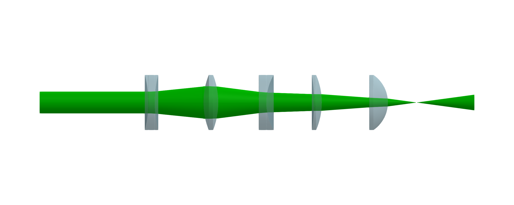
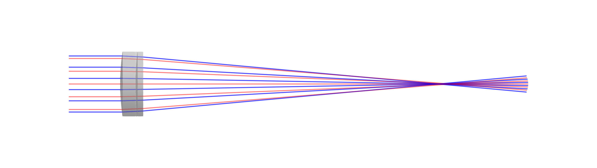

Lenses
Lenses are fundamental optical components used to focus or diverge light, making them essential for constructing imaging systems. The BeamletOptics.AbstractRefractiveOptic type provides a general definition of components that refract light. This package includes a variety of rotationally symmetric lens models to simulate simple imaging setups. All lens models provided as part of this package are based on SDFs. Refer to the Signed Distance Functions (SDFs) section for more information.
A concrete implementation is provided by the Lens type.
BeamletOptics.Lens — TypeLens{T, S <: AbstractShape{T}, N <: RefractiveIndex} <: AbstractRefractiveOptic{T, S, N}Represents an uncoated Lens with a homogeneous RefractiveIndex n = n(λ). Refer to the Lens and SphericalLens constructors for more information on how to generate lenses.
Fields
shape: geometry of the lens, refer toAbstractShapefor more informationn:RefractiveIndexfunction that returns n(λ)
Additional information
Constructing lens shapes
In practice, a great variety and mixture of different lens shapes exists – e.g. spherical and aspherical lenses surfaces and all combinations thereof. Usually a lens is a block of a transparent, dielectric material with two optically active surfaces (fancy special cases using the sides of the lens as well exist, e.g. for HUD displays). It is common to describe such a lens by specifying the properties of the two surfaces and the material in between. This package, however, works with closed volume shapes for all of its optical elements and any erroneous (i.e. non-watertight) SDF might result in unphysical behaviour. Refer to the Geometry representation section for more information.
One of the following constructors can be used to generate lens objects:
Lensconstructor- capable constructor for a wide combination of surface types (spherical, aspherical, etc.)
SphericalLensconstructor- simplified constructor for spherical surfaces
Refer to the specific documentation or enter e.g. ? Lens into the REPL to learn more about the constructors and their interfaces, as well as sign definitions and so on.
Surface based lens construction
To make it easier to specify lenses similar to established optical simulation frameworks, e.g. Zemax, the BeamletOptics.AbstractSurface API can be used. This is a helper interface for surfaces specifications and interprets them to the corresponding SDF-based volume representation.
It is important to note that BMO does not work with these surfaces representations directly for ray tracing. All shapes are translated to closed volumes internally.
Currently the following surface types are implemented:
julia> BeamletOptics.list_subtypes(BeamletOptics.AbstractSurface);└── BeamletOptics.AbstractSurface ├── BeamletOptics.AbstractCylindricalSurface │ ├── BeamletOptics.AbstractAcylindricalSurface │ │ └── AcylindricalSurface │ ├── CylindricalSurface │ └── RectangularFlatSurface └── BeamletOptics.AbstractRotationallySymmetricSurface ├── CircularFlatSurface ├── EvenAsphericalSurface └── SphericalSurface At least 9 types have been found.
A Lens can be then constructed with the following function call:
BeamletOptics.Lens — Method Lens(front_surface::AbstractRotationallySymmetricSurface, back_surface::AbstractRotationallySymmetricSurface, center_thickness::Real, n::RefractiveIndex)Constructs a new Lens object using the surface specifications front_surface and back_surface and the center_thickness. These inputs are used to construct a UnionSDF that consists of the appropriate sub-SDFs to represent the shape of the lens.
The material properties are supplied via the n parameter.
Additional information
Lens constructor example
In practice, this works as follows: the bi-convex LB1811 lens consists of two spherical surfaces and can be constructed like this:
# refractive index of NBK7 for 532 and 1064 nm
NBK7 = DiscreteRefractiveIndex([532e-9, 1064e-9], [1.5195, 1.5066])
# lens diameter
d = BeamletOptics.inch
# lens types
r1 = 34.9e-3
r2 = -34.9e-3
l = 6.8e-3
LB1811 = Lens(
SphericalSurface(r1, d),
SphericalSurface(r2, d),
l,
NBK7
)![](data:image/png;base64, iVBORw0KGgoAAAANSUhEUgAAAlgAAADwCAIAAABT1I0hAAAAAXNSR0IArs4c6QAAAARnQU1BAACxjwv8YQUAAAAgY0hSTQAAeiYAAICEAAD6AAAAgOgAAHUwAADqYAAAOpgAABdwnLpRPAAAAAlwSFlzAAAOxAAADsQBlSsOGwAAEvVJREFUeAHtwU2PXPd55uHf8z9P9Rtf1WyKlChSkplgYHmAwAvDOwMBsksw+/lq2WeRbzDLgWdlwAgEBEoEg6JFypFIie9skt1Vp/73VFezxSZ5ilKQcxoBzn1dKQkzM7OxSszMzEYsMTMzG7HEzMxsxBIzM7MRS8zMzEYsMTMzG7HEzMxsxBIzM7MRS8zMzEYsMTMzG7HEzMxsxBIzM7MRS8zMzEYsMTMzG7HEzMxsxBIzM7MRS8zMzEYsMTMzG7HEzMxsxBIzM7MRS8zMzEYsMTMzG7HEzMxsxBIzM7MRS8zMzEYsMTMzG7HEzMxsxBIzM7MRS8zMzEYsMTMzG7HEzMxsxBIzM7MRS8zMzEYsMTMzG7HEzMxsxBIzM7MRS8zMzEYsMTMzG7HEzMxsxBIzM7MRS8zMzEYsMTMzG7HEzMxsxBIzM7MRS8zMzEYsMTMzG7HEzMxsxBIzM7MRS8zMzEYsMTMzG7HEzMxsxBIzO0GSvvzmu7+6cokVmlJKBGZ2UhIzOym11v/zf3//kLUfHj99/Oz5i/0pS5vra+dOba1PEljL/Jvr10oEZnYiEjM7KbO2/dOfv75w9fpf7j3gmKcv9p6+2ANKaZrC//z0o9I0mNmJSMzspPxw/8GLvf2qNssaXXIyaWfTOw8fX93ZxsxORGJmJ6LW+v/+8MdmYytzLSLoIlWJP3/3/ZUL75UIzGx4iZmdiFnb3rh9a+PU2ShNRNBFguDuwyfzWkvTYGbDS8zsRHx165u2rbPplCCi0CVKxJx51Z0Hj69e3MbMhpeY2fBqrZ9/8e+1ViCW6FJKM6et1D/f+f7KznslAjMbWGJmw5u17c1bt1mIKFEIOkkiCHHn4eN5raVpMLOBJWY2vK9u3Z7NWw5IQUTwDhG16s6Dx1cvbmNmA0vMbGC11s+/+LLWCrH/4kUhgmCFIISqdPO776/svFciMLMhJWY2sFnb3rx1G4IlISLo0jRN285CKOLuw8fzWkvTYGZDSsxsYF/duj1rW45EKRFBF0kciEDzWu88eHz14jZmNqTEzIZUa/39H/5YayWChSAiWEESCwEKoZvffX9l570SgZkNJjGzIc3a9of7DwhekSKCLqVpZtMpiKU7Dx/Nay1Ng5kNJjGzIf1w/8GsbTkmSmGFWuccChB1Xu88eHT14gXMbDCJmQ2m1vr7P/yx1hrBoSCIIILVghCCqOjmd99f2dkuEZjZMBIzG8ysbb+6dTtYCI4UIlgpAokABYhHu8/ntZamwcyGkZjZyVJA8C4BikCCvel0b3862drEzIaRmNlgvrp1e9a2vCkg+FliXvXo2fMzW5uY2TASMxtGrfXzL76stUZwXIHgpwSICGrVzW/vXtnZLhGY2QASMxvGrG2/unWbtygggpUCxIEAAQ93n89rLU2DmQ0gMbOhCYKfTRwKEBGxN53t7U8nW5uY2QASMxvGV7duz9qWheB1wbsEB8SRea0Pd5+f2drEzAaQmNkAaq2ff/FlrTV4UxBB8LMEaOHmt3c/urhdIjCzviVmNoBZ23516zbdRPCzBIiFh7vP5vNassHM+paY2ZAEQXCMamWFUgpvi9ibzfam00luYmZ9S8xsAF/duj1rWyBYEARHhIJupWl4KUAcqfP6cPf5ma1NzKxviZn1rdb6p5tf11rpUpqGCLrM25Y3BahK//HD/Y8ubpcIzKxXiZn1bda2f/7mG14JjgmCdxFHAsRLdx48ms9ryQYz61ViZoMTBEckBd2anECA+FGAWNibTvem00luYma9Ssysb7vPnu8+e8GhAIJjaq1E0KVpGl4SSwECAiIwswEkZta3u/fuzdoZhwQhCF5Skw0rTKf7IBBvivm83nnw+MzWJmbWq8TMelVr/fyLf69VvBK8Egv851Xph0ePr1+5VCIws/4kZtarWdvevXeP1wiClxQi6Bal8JYAceDOg0fzeS3ZYGb9Scysb7vPnrOaJFZomobV9qbTF9PpJDcxs/4kZtar3WfPeVNwjCRWaGczzOxkJWbWq7v37s3alhUkIgKCLmvra7tPn3JEvGZe690Hj85ubWJm/UnMrD+11j/d/LrWCsErgmApiHmdZ9CplIbVqvT9o8fXr1wuEZhZTxIz68+sbR89fsI7BQGiy/7+HgviOPHK7ou9+byWbDCzniRmdoKESlMQnZqmcEgckjhu9/kLzKxXiZn16ptvv2O1IGoVK4gDYpV4MZ1hZr1KzOxEidXm8xbEIYEA8bofHj3+cGcbM+tJYmb9+ebb73ibIDgkDkiiSykNBwSigyAws14lZtafR4+fzNqWNwTH1bZlMqHL+traU34kEK+J+bzuvtjDzPqTmFlPaq33HjysqrxBEBwKYjqbrm9u0mVtYwOxIDqpqj7afValEoGZ9SExs57M2vbOD/d4WwCCAITW1tck0eXZ7q54t3j45Ol8Xks2mFkfEjMbmiCCI4WCRJd5O2NBLIhjJF4SZtarxMz68+jJEwTBO8zn82YyoctksgZiQXQQC7sv9jCz/iRm1q/gOEGwIAiWptP9tfV1uqytr3NAIIQAgYSZDSYxs5483X32dPcZP6WUEKJL284AcUhIII6IA8/3p8/39s+d3sLM+pCY2cmaTNZVRZfdJ08Rx4kfCTMbQGJmPXn05AkLguAdFAjRJQgQQrwiDkgcEEK7ey/Ond7CzPqQmNkJEASHNJ9TGrqUpogO4hgFwsz6kphZT+58f2/WtqwkCGC2v9/khC7rGxvPnu2CEK8TR+bz+YOnu1cuXsDM+pCYWR9qrbvPntVa+SnT2WxdoktE8JIWEEhIiCUBVXr+Yr9KJQIz+y9LzKwPs7bd29/nZyilSKKLJIT4kThOHJrOZvP5vGRiZv9liZkNQhAsCYIj0tr6Oogue3svQIhD4jgBQiBhZr1JzKwnz/f2+EkRQaiKLtO9fQ5I4pA4Ig6Ihf3ZDDPrSWJmJ0MQLGiJFcQhcUQgJBBm1r/EzHry+MlTfoIAISFWEYckISEhIZbEgnj2fA8z60liZsMTBC9piS7BgiS6CZAwsz4lZjYUQfA2CYlOUTggxII4TrwkEGbWk8TMTpKoUkh0icIhIRCvCLEgzKxniZn15N6Dh7ybgFrn81IKXSJC4iWBJCSEWBBCLDzcfYaZ9SQxs94JAgi6zOfzJpMuQYBYEksCIRAgDogQZtaXxMyGIgheJ6jzORKdggMSHcQBCQlhZj1JzKwn4l0EwQHVKolOYkGAhBA/EsLMhpCY2YAEwRFBCKEFugghAWJB6AASYkkSZtavxMx6EhwjCDoFCNFFtQqQOEYckgQIgYSZ9SQxsyEES8FbRCA6zedzDkniFSHxI0FgZj1JzGwIggAEwesiQhJd6nwOiCVJCARCIEAIgTCz3iRm1pML2+99e+cuPyUCSXSZt22TCRJLQgJxjBBImFlPEjMbliB4g0QXgQCBxBGBEEhCLOjcmdOYWU8SMztxkvgpkkAgECABQphZvxIzG4ggeJuEJFaRxEsSCAQCxAEtIMysL4mZnTAJiXeQQCyJQ2JBCDPrWWJmPTl/9sy3d+7SQRAcEVUEK4gDEkggkJBAQggJOL21gZn1JDGznmxubPAGQXCcoM5rRGEViSUBAoFAgBALkhBm1pfEzPojCH5CO5uVpqHLZLIGSAKBxI/EAYkDa2sTzKwniZn1YZK5sb7OSoJgSbUi0aU0DYgFgQAJgRBIAiSk9Uk2pcHM+pCYWR9KKWdOnSqlqFbeLZBEl/m8LaUBiSWBkBASIBaixNbGZimBmfUhMbOeXH5/Z5I5nU45ThBAcKQ0KYku7XS6trGJAAmBQCAWBGhh0pT1SWJmPUnMbFDBkiBYCkCiS51XkACBEAgQCJDEgsQHO9uYWU8SM+vJ+bNneZsgWBIEWmIVSYCEWBAIISGxIIQQZtafxMx6cub0Kd4lAEltO5tE0KXJZEEghEAgFgQSIITi1OYGZtaTxMz6c+b0qfsPprxBEIAggNrOlaJLaRqQWBISCAQIkIQEwsz6k5hZrwTB64LjoilCdGlns8wJSAgEEhISSGJpa2MDM+tPYmb9OX/27L0HDwXBMYJgSRGlREGiy7xtBQiExEsCiQVJCISZ9Scxs74FbxEEC5JqrVGCVSQhEGgBCQRoARAf7FzAzPqTmFlPJpmXL+7c+PoW76J2Ni1lgy6T9TUWhMQhgYQkFnRgfTJpSoOZ9SQxs56UUna23yul1FqDtwiChVIaSXSZt60QCJBAIIFYkASlxHtnz5QSmFlPEjPrz3vnzk4yp9MpbwsOlaYB0aXO5wgJEEhIINACIGVTzmxtYmb9ScysP1c//AAQBG8RBAuqVUGnCEAgCQQCCYkFCZA4fWoLM+tPYmYnS6pBoVMgsSQhEIckgSTQ6c0NzKw/iZn16uqHH9z4+pYgeIsgkESILqpzkAQCIaFDgATa2twQZtanxMxOliRqpUtE4YCEQCAOSYDEmc1NzKxXiZn1Z5J5/txZ3mnetk0mXUoTEogFCQESkkAS0ulTW1kKZtafxMz6U0r56PKlf/nXL2qtguAtggCJLvO2BQkhgZAEkpCQonD5wnYpBTPrT2JmvfrFtauTzP3pFBAEb4ooVaJLAAIhEEsSoAWYlObK+zuYWa8SM+vV6VNbp09t7U+nrFDbNpqGFYRASGgJJLGgBbY2NjCzXiVmNpigS4BEF0kICbEkIQFaQFsba5hZ3xIz69Uk89NrV+8/fAQIgjdJSJWVBEJLIJDEgrjy/sVsCmbWq8TMelVK+R+ffvIv//pFrZUuUg2CFSTEEQkJhBQRly9sl1Iws14lZta3Sxd3Jpn70yld2tmsyaRL5gSEjoAOICmbcuXSRcysb4mZ9e30qS2OiAPBK6U0iE61ziUQCCQkFiQh0NbGBmbWt8TMBnD61Nb+dEo3LdBl3laQkJBA6ABCbK5vYGYDSMysb5PMSxd37j98xFLwGkkQrCIhISEhQAhJH126mE3BzPqWmFnfSim//uyXX964WWsFBMErdT6PUuhSSiMQiAWhBSSVEp9e+aCUgpn1LTGzAVz/5Nokc3865S0RwTtISGgBISRQU8qF8+cwswEkZjaM06e29qdTlgTBS5IQnea1FYhDkhBa2Fxf39rYwMwGkJjZACaZly7u3H/4iLdIgFhFQi8hoQV2zp/LpmBmA0jMbACllF9/9ssvb9ystQIB4kCwIFYTSxJCSKJE/PIXn5ZSMLMBJGY2jOufXJtk7k+ngCB4SRLvoCW0gEBqsuy8dw4zG0ZiZoM5fWprfzplSRwIfoKWEKADaHN9Y2tjAzMbRmJmw5hkXrq4c//hI14niZ8gIQnQws75s9kUzGwYiZkNo5Ty689++eWNm7VWjpNYTQdAL5WIz65/WkrBzIaRmNlgrn9ybZK5P53ynyC0AGghm2bn/DnMbDCJmQ3p9Kmt/emUIwJJrCYhdAhpc2N9a3MDMxtMYmaDmWReurhz/+Ejfj4JCbTEzvlz2TSY2WASMxtMKeV3v/3Nlzdu1lr5eYQkJCEi+Oz6p6UUzGwwiZkN6f0L25PM/emUI1KFoEtEIIEOTZrm4w8vY2ZDSsxsSJPMixe2//LdHV4JVtABJCEkXfvwUjYNZjakxMyGVEr5h7/723/8p3+utXJIIlgh0Esl4rPrn5ZSMLMhJWY2sPcvbE8y96dTlgQhugVCSELZNB9/eBkzG1hiZgObZF7/5Nq//ekGR8QKeomqax9dyqbBzAaWmNnASim/++1vvrxxs9bKAUGwihaIiF/91S9KKZjZwBIzG977F7YnmfvTKS+JFSSBmqZ8/OFlzGx4iZkNb5J58cL2X767w4IgWEVLH39wOZsGMxteYmbDK6X8w9/97T/+0z/XWlkQq0iKiF/99fVSCmY2vMTMTsT7F7YnmfvTKe8mNaV8/OFlzOxEJGZ2IiaZ1z+59m9/usE7Sfr4w8vZNJjZiUjM7ESUUn732998eeNmrZUVAiT96q+vl1IwsxORmNlJef/C9iRzfzplBUFEfHLlA8zspCRmdlImmdc/uba1sQF8/Zf/AJ7uPgPOnD4FfPLRFeDc+fPZNJjZSUnM7KSUUv73//r7WduyQkQ0TVNKwcxOSmJmJ6iUsr62hpn9t5GYmZmNWGJmZjZiiZmZ2YglZmZmI5aYmZmNWGJmZjZiiZmZ2YglZmZmI5aYmZmNWGJmZjZiiZmZ2YglZmZmI5aYmZmNWGJmZjZiiZmZ2YglZmZmI5aYmZmNWGJmZjZiiZmZ2YglZmZmI5aYmZmNWGJmZjZiiZmZ2YglZmZmI5aYmZmNWGJmZjZiiZmZ2YglZmZmI5aYmZmNWGJmZjZiiZmZ2YglZmZmI5aYmZmNWGJmZjZiiZmZ2YglZmZmI5aYmZmNWGJmZjZiiZmZ2YglZmZmI5aYmZmNWGJmZjZiiZmZ2YglZmZmI5aYmZmNWGJmZjZiiZmZ2YglZmZmI5aYmZmNWGJmZjZiiZmZ2Yj9fxXZsXjo3ECwAAAAAElFTkSuQmCC)
SDF-based spherical lenses
In order to model the lens surfaces shown above, the following SDF-based spherical lens shapes have been implemented:
BeamletOptics.ConvexSphericalSurfaceSDFBeamletOptics.ConcaveSphericalSurfaceSDFBeamletOptics.MeniscusLensSDFBeamletOptics.PlanoSurfaceSDF
The BeamletOptics.AbstractSurface will translate surface specifications into volume representations using the sub-volumes above. This is achieved by combining the sub-volumes via the BeamletOptics.UnionSDF-API in order to enable the quasi-surface-based design of spherical lens systems. Additional distance functions have been implemented in order to model aspherical and cylinder lenses.
Spherical lenses
Spherical lenses are characterized by surfaces with constant curvature, making them straightforward to model and ideal for basic imaging applications. The SphericalLens constructor can be used in order to define this lens type in a concise manner.
BeamletOptics.SphericalLens — FunctionSphericalLens(r1, r2, l, d=1inch, n=λ->1.5)Creates a spherical Lens based on:
r1: front radiusr2: back radiusl: lens thicknessd: lens diameter, default is one inchn:RefractiveIndexas a function of λ, i.e.n = n(λ)
Notes
The ROC is defined to be positive if the center is to the right of the surface. Otherwise it is negative.
If l is set to zero, a ThinLens will be created. However, note that the actual lens thickness will be different from zero.
Below, several spherical lenses are recreated from manufacturer data.
GaussianBeamletparameters- $w_0 = 5~\text{mm}$
- $\lambda=532~\text{nm}$
- Lenses (in order of appearance)
The spherical lenses are shown below. To recreate this figure, refer to the Spherical lens example.

Aspherical lenses
Aspherical lenses offer more advanced control over aberrations, enabling higher performance in specialized optical systems. The package offers surface support for rotationally symetrical aspheric lenses that adhere to the DIN ISO 10110 convention with even terms.
To construct a lens with any possible combination of convex/concave, spherical/aspherical surfaces you can use the Lens constructor with the EvenAsphericalSurface surface specification type.
A complex example of such a lens might look like the following example. This lens has the following peculiarities:
- The front surface is an aspherical convex surface with a clear diameter smaller than the full mechanical diameter
- The back surface is an aspherical concave surface which first curves outwards before change slope and curving invards, giving a more "convex" like character while still beeing a concave lens by definition. Also this surface extends towards the full outer diameter.
Aspheric lenses are somewhat experimental at the moment. Use this feature with some caution when building unconventional lenses. Default/simple aspheres work fine.
L3 = Lens(
EvenAsphericalSurface(
3.618e-3, # r
3.04e-3, # d
-44.874, # conic
[0,-0.14756*(1e3)^3, 0.035194*(1e3)^5, -0.0032262*(1e3)^7,
0.0018592*(1e3)^9, 0.00036658*(1e3)^11, -0.00016039*(1e3)^13,
-3.1846e-5*(1e3)^15] # coeffs
),
EvenAsphericalSurface(
2.161e-3, # r
3.7e-3, # d
-10.719, # conic
[0,-0.096568*(1e3)^3, 0.026771*(1e3)^5, -0.011261*(1e3)^7,
0.0019879*(1e3)^9, 0.00015579*(1e3)^11, -0.00012433*(1e3)^13,
1.5264e-5*(1e3)^15] # coeffs
),
0.7e-3, # center_thickness
n -> 1.580200 # refractive index
)![](data:image/png;base64, iVBORw0KGgoAAAANSUhEUgAAAlgAAADwCAIAAABT1I0hAAAAAXNSR0IArs4c6QAAAARnQU1BAACxjwv8YQUAAAAgY0hSTQAAeiYAAICEAAD6AAAAgOgAAHUwAADqYAAAOpgAABdwnLpRPAAAAAlwSFlzAAAOxAAADsQBlSsOGwAAFfBJREFUeAHtwV+PZdeB1uHfu/Y6p8rd7ba72267SQyMk0xIxolAmjuQQOKCCz4AF3wAviB3gzQ3aIQEVzC2kwCTMFGSiRN32/23qs7e62WfU1V2ddcp1NasSoT2+zzVNhEREUtViYiIWLBKRETEglUiIiIWrBIREbFglYiIiAWrRERELFglIiJiwSoRERELVomIiFiwSkRExIJVIiIiFqwSERGxYJWIiIgFq0RERCxYJSIiYsEqERERC1aJiIhYsEpERMSCVSIiIhasEhERsWCViIiIBatEREQsWCUiImLBKhEREQtWiYiIWLBKRETEglUiIiIWrBIREbFglYiIiAWrRERELFglIiJiwSoRERELVomIiFiwSkRExIJVIiIiFqwSERGxYJWIiIgFq0RERCxYJSIiYsEqERERC1aJiIhYsEpERMSCVSIiIhasEhERsWCViIiIBatEREQsWCUiImLBKhEREQtWiYiIWLBKRETEglUiIiIWrBIRnTR7mhriNQn+129+970H93/2q7/77rfeEzN99uWT+2+9ydcMGIZSikRE9FaJiB6m1v7rJz9TXR1vRuD58THnHj97wT6SJvQX//mv7t5/8D/+z69qrWUoReXNG28IvHO4qq21VVEdyj/77j8uEhHRVSUiemitffabXz8ZDiXx2obVelT9yaef/pMf/kDD4IYLXzw/Yma32TS1Nk3j9OH796bWyjAQEV1VIqIH2wdv3HhyYpXCayvDoGE4Pjn59JNPP/rxj4daJSEBBu2AJI43ExFxDSoR0YPNprVhqIjXpllrTWKapk8++fijH/34YD0gcUpCM5CIiOtRiYgeStHRs2fceEsSr03S8dEREtI0Tp98/PFHP/rRer1mxyABAl4cHxMR16ASET3Y/t3jp3du3pYKr03S8cmJkATSNE2ffvLJD//sz1brNbYkEEIIiYi4BpWI6OStW7daa8Ow4rVJpagggcTWZhw//eTTH/zwh6tVtXYQ4vHzF0TENahERCfjeFIB8Q0INEMS2oFx3Pzk00++/4Mf1GFgJiLi+lQiogchQGjGaxvHEQECxI6YbcbxJ59++v3vf38YBiEQ8PjZi3u3bxERXVUioof/+ctfHTduHhzyTRyfnBQkgUBCgJCAcbP56U9+8r3vfW8oRSBARER3lYjo4cNvP/iLv/ov9dHD23fv8dqmcUICgQAh8RVtNpuf/eyn3/nOd4ZSgOdHJ/feJCL6qkRED0U6evrsnW/9o9amL7744u2333769OmtW7eYScdHx1xwstkA4zSuVmvETEISM0lsWWA2m80vfv7zDz/8EBER16ESET1Mrf320aNnP/vpvXv3Hj169Pjx4ydPnhweHgLj1I43Y5F4WSllWK8lIUDMJGYSMxsJ68XR0YujoxsHByfjSET0VomIHoSmzcbNn3/+EPjyy8fA8+cvgJNxXK3XzeZlbWrFKyEhcSXbv/j5L77/p396spmIiN4qEdGJ2K+UAmKfUga1kZlAEkjiVdqMm1/8zf/+3v234QER0VUlInowbnWtUrikDFUS+9hNCAES/y/PXxwdHZ8QEb1VIqIHIdyePn1y683bvEwSEvtIBSYQpyTOCczXxtb++uOP//k//aiUQkT0U4mITqZx45NBvMpY7CchS5wRW5JsI2FzTvD7h48243iwXhMR/VQiopdm9rFBYh+poIaQhARIAiTZFpivbcbNZ58//ODB+0REP5WI6MPsPHr4+Z2797hAM65itgQIkNixeYVhmtp//E9/+R/+/b8rpRARnVQiohcJxCVlKEjsJYG4RMLmst99/nAzjgfrNRHRSSUi+pAwpyReIq4giVMCSVzBnNqM42efP/zgwftERCeViOhlGNh59Pnnd+7d42sWYi8zEwgJkISM2THnBBhorf23//7X33rvfimFiOihEhGdDHVtsSXEBSpI7GNbArElMRNYYEBgviJ2fv63v9yM48F6TUT0UImITmwjgcRLJHEFY3FGIImZwFxgDJiIuAaViOjDm+MXqzdusvPo4cM7d++yY7uocJkYyuDJoBmSmMmYHXNKXPD02fOnz54frNdERA+ViOhDjKNtSZyS2LFNYS9jzgmQABmzJTAzExHXphIRfbipSOIScTUDFiAQL7HNHptx/Ju//eW9O28TET1UIqKTYRhA4swXDx/euXuXmcQVVApNCCGhmQ2Yq7XWfv/wUWutlEJE/L1VIqIHg5uZCRDia9piH7cmZgK0A7YxF5hXHB0fb8bxYL0mIv7eKhHRgxBtwg0VQHxNXEkSO5K4QGDOiYi4PpWI6MMeilS4RKVwFQkQO5KQ2THmlDGveHF0RER0UomIToahIi569Ojhnbv3hLiCJIuZdhBiy5gtYyLiWlUiohPbbEnilEBgLIl9ipgMYiaQZJstgTHmlLngi8dPiIhOKhHRidtkWxIva9M01Mo+U7MxF4iZRDMR8YdQiYhezDclzkhoCzOz+ZrBgImI61CJiB4MDUvikqFWIS4TnjETiC0hccrmjImIa1OJiB4EanazijglztgUsY8kGzAzSVzBXPSbz35nm4jooRIRvUhcZBCPHj688+79oRT2qat6sjkGAeJV5iKzY/vLx48lERE9VCKiF0lFYBCvZ9xsQGD2ssGYmTljezOOtomIHioR0YeEZ5IwiK9I4gqlDI0TLrPNjomIa1WJiB6MNQySuGQaxzIM7FOGwTYR8cdTiYgeBG7GIIxlIduSPNQKZg+5TZwxGAQGzBlzypybpomI6KcSEZ143NhNFMRF0zSVUrhMbDYbZmZmI4GxzcwGs2Ui4tpUIqKThmcSM2NZyCCuIBiGYbM5AWNmnrFjsyWweck4TUREP5WI6EQakMBYCIPAZhgG9rFdhgHPMMZGAnPOGMwpc2ocp9ZMRHRSiYgeDCpFYBAGgW1JHjeb1XrNZeLk6NjsGIMwBptT5oyZldt32+OHxyfH09SIiE4qEdGDwNNoW8hCNggZy5i9jDFbNsYz2QYMtpkZjJkZGxinyc1ERCeViOjExiCMZSG2DHWotrlEM/AWGNvYBtvY7JhT5ismIjqqREQnKsK2JAwyloW8GTfr9QGX2EayDd4CbGy+ZoGZCTBbRyfHB6s1EdFJJSJ6MAyrAySMhWyQZVmemm32OTw8fHr0wgaMjXiFMRhszggREf1UIqIHgduI18gYI2RZllcHB7bZp02NLZ/C+BTeYWa+9uLoyERET5WI6GTajGXdUBEzg4xluTUVsYeOjl74DLYxnmHMGSMwpzyOEzYiInqpREQnrU3MbAOSbJDlk5OT9cEBe3gcR2x8BgPGnDNgg5m11jYqxkREP5WI6MEGb0liZlsSxmrThM1lEjPbzAzGwuxn3LawiIh+KhHRj3dAEthGkksptrlEUOtqHDcY280ueAY+hTEGg9lp04SMiYheKhHRg4RUOGMbSeBxnLzDPrUOG3ymuRXjLXaMMTMzMwYbg4iIXioR0UlZVWYGMbORaPY4bSorLrNX6/XzZmMb27KN2TKXGMZxg4iIjioR0YOhrg8NxpiZhA32arV2M5cYnj15YhsDBhtjMBgwp0xEXJ9KRPQg5GnyMGBLAmxLmmbjWNaFfYzZMt7CBowNGAzYvMxgIqKXSkT04WnalGEAbEsCbIOncayrFfu4GfwVbMAG29jYzIzZMRHRWyUiOmnTVGxmkm0BEsY77ONZs42NbWzxMnPR5vgYEREdVSKiE7uZLdlIBmxjwDb7GJob2JiZscAYMBeYHUuYiOioEhG9NGODLGQzkzBb5kpmy9iWjMWWmZktM7ONkWdEREeViOjBxmAQxlgCZDOTjLmabTBgI9mAOWfOuTUDIiI6qkRELza2JQE2wggssM0+YmbAgI1sCzEzr3pxfHzwxo2jZ0+JiH4qEdGXbQmQAdts2exjsM3MNogds2MwO+ZMa42I6KoSEf0YC2EDlsSWd9jLnsapTRM7blYRiDN28wwbAyYieqtEREfGWBIz2xI+wz7GiC1vSbYlmR2bHRMR16YSEd2IHdtIAmxDa22w2ctgGxsEBmEsxCuMDw8OPj86IiK6qkREDxLIMwkQtkES2K2Z/byDATMziJeZc1KRsImIjioR0YMBFcBGMgiwDdjNNnvZnDIYZCwLAQZstmwi4ppUIqIHgSQwyEYYiZmxjc3VPANjLGQZs2MwNmAi4npUIqITqWCQQQZsCbNlm30Mtpl5SzLGQhZgDAZzxqv1wfHRCyKin0pEdKJSGmCEESAbbKnYZh+3ZhtvyVsgCTAR8QdRiYgebHYMMoiZQYAkMPtM0+jWDOIrxrKIiD+MSkT0IDGeHGt9ILbMTGBjhG32GU9OEPgMtiRjGRD4FDY2yEREZ5WI6MGmTdNgEOcMwmyZPQQSxlhgkLcERsicM1vGtdYTIqKnSkT0YmwjQDJb8mq9Hk82dVW5zBpqPTk5wtiWbUm2kWQQ5isGTER0V4mIXsSWQTYSYJDtZrOPa12dNBsLs2MQOwbMRXIZBiKiq0pEdCIVThmwBUhGkjF7CQMGY1s2EthIGLCNjQ0UlTIMRERXlYjoQUJFgLEQMwO2QMJmH7cGNjYWnmEDAnPGnFEpB1gSEdFPJSI6USkGjGVxShgh2+yzOTlxMzbGNlg2pyRm5owN1DqIiOipEhE92KACBmEMCGHQOG5qrezTpsk2xrYsxKsExuyYWisR0VUlInqQaJtjVgeAxJZlQLabbfYpQwUbCwwC20jMbIEBm3N1GIiIrioR0YONbRmEjQQYhBmGapt9JDEztuUtSdgGgSVsA7bBbA3DQET0U4mIXiSDMGALEEa0aVIp7GO31mwsPJO3AAESNi8xUGu1TUR0UomITqRijIUAA0aCZg82l0mlFLvhLQmDOGMQFxmQVOswTRMR0UklInoQuDUGjDFCCLANttnHPjk6AgwCY2FsJHbMjm3A1KNnwOH64OjkhIjopBIRPRhs0ywJYYwBCTxrjX1aaxi8Je9gbHbEOZtztQ7DKCKik0pE9CCQZAHGQuzYqLVJpbDPwRs3Ni+e2Za3ZFvGRsggASYirlElInowUAbAIIyF2HEpAzb7TOPGNmAQGGQQGIQ5ZS6ow0BE9FOJiB4EtAkJMELGzATTOA7DwD4vnj3FGMvGYBBgEDObc8bsDMNARPRTiYgeDBiDmBmLmTBImP0Ob9x8/uUjPMM23sKA2ZHEljGIiOiuEhGdWGAsxMzMLMTMNvu4NduAsLG8JQuMANlGYCLimlQiohc3MMYIMRPG2BaNPbTZnNgW2JaNDBgLYRBb5ozASKq1SiIieqhERC+WbUlgzMzo1q2bL46O2M+r9cHJs6cWAoNBNpZlkGwEiAskvX37tm0ioodKRPQiZjYS58yWbPaym20h2/KOjI2BhoQlmZc9uP+uJCKih0pE9CJ2bANCCGy3aVQp7LM5PrYNyFvylmQsBAaBQWAi4jpUIqIjG4ktYwwYEFdYrQ+Onz4BjMXLDGJmwIiIuBaViOjFWIiXGAO22WcaR2NAxjvyFhgxk9kSRkTENahERCfGgG12BEjYxpi9NifHGINt+Qy2MAZkWYgzQsa8dftNIqKTSkRcm5s3bjCzucLq4PDk+VNRvCPbIGMhZgZxxiAiordKRPRiGYuZEAbbgG3208wGWZyzEWBbCBnLsrjgxuEhEdFJJSJ6EWfEGQmwLYk9PANj+RyeNVyE3UAIWRbilIiIjioR0ZVBNgiBzSmz1zRubIPlM/KWjGUhXiXsw4ODVa1ERA+ViOhEBnHON2/c5Jwx+0gFG9lYmK8ZxBmDzJkylHfu3SmlEBE9VCKiE4uZAInXM9TBIIOx8Y6MDTaYLQkjQMCq1j/54AMiopNKRPxx2Zax5a80LBlkdoxkIuI6VCKiE0mYUzdv3OA1vHj61CCDPBPmjEF8xSBO3bp549bNG0REJ5WI6MUIkJhJvIZmY1sWYmY8A4FBNsggERHXpBIRHUmAQLyWulpt2LINnsmzZotmFyGLLYPA8CcffLCqlYjopBIRvQgB0s2bN3mZEHt5SwYB3sIy2MhgLMQZUVT+/McflVKIiE4qEdGLoQiQxAWSuIJttoyF2DJfMQgwBrG1qvXde3eJiH4qEdGLQBJI4rVotV6/MGZmLMk7zRa2bGOEmAl0/97dVa1ERD+ViOhEQtKtW7d4mSSuMI2jsThlG2Qb2wIbyVgIsKR/+6//VSmFiOinEhGdiCKpSLxMElfYbDbMDOICM7ORQcwMYijl3Xt3iYiuKhHRiaQ6VCReJa6wWq2OzZY546/hLWRm1vv3313VSkR0VYmITgQHBwdS4WWS2EtM0wQGA2bHkgHzFYMYSvnudz4spRARXVUiogcJFYZaVcQrJLGfSjF72NiWtyRjHR6s3zg4ICJ6q0REDzYqVUVS4WWSuEKReJVnssEGgaEOw7e/9a2337pNRPRWiYgeJFZDGUpB4mWSEHvV9frwxs3N8RGX2AhjMP/gwXtl0MF6TUT0VomIHiSt6nBzQOIVt+69xRVeHJ98+eK5SgExM1vyTLabPfiNw4PD9YEQEXENKhHRg+3bb77pLV6fkBCICwwCg6CoPHjvvrHxrRtvEBG9VSKiB0nrWo83G76J1aoaCxBbwiCDjF2K/uG3HxTJNjYmIrqrREQn9+7e+fVvP+ObqLUiIWZCnLMpQ/n2g/eLZBuDiYjrUImInsw3YXtV69SaOCO2hlK+/d79IrnZxafu3H6TiOitEhGdCDCIb2SzOSnDCoQAIYZSHtx/R8LNLsYG333rNhFxDSoR0YnZMd/Iqq4mQIAEpZT337kryVutuRVvYSLiOlQiopO3b7/567/7Ld+E2zQMQ5uaEKKU8t69u6UUbIwNPoeJiGtQiYg/JiEQSEMp7959u0i2AbvZsovdbL954w0i4hpUIqKTNw4PzTcjaRiGzeRSyv07b5UitgzyqWY3nyIirkElIv6IbGyJ+3feKqVgkG2BkbzVbGMfrtdgIqK3SkT0sKr18ODgz3/80YujI+CLx0849/uHj7jCyWazGuo7d++uatUM3rl7B82Qylu3b5dSbt64MQzDwXpdh4GI6K0SET2UUv7Nv/wXm3Hkm7BdSmmtSeISIWZiVoehlEJE9FaJiE5KKQfrNRHx/5VKRETEglUiIiIWrBIREbFglYiIiAWrRERELFglIiJiwSoRERELVomIiFiwSkRExIJVIiIiFqwSERGxYJWIiIgFq0RERCxYJSIiYsEqERERC1aJiIhYsEpERMSCVSIiIhasEhERsWCViIiIBatEREQsWCUiImLBKhEREQtWiYiIWLBKRETEglUiIiIWrBIREbFglYiIiAWrRERELFglIiJiwSoRERELVomIiFiwSkRExIJVIiIiFqwSERGxYJWIiIgFq0RERCxYJSIiYsEqERERC1aJiIhYsEpERMSCVSIiIhasEhERsWCViIiIBatEREQsWCUiImLBKhEREQtWiYiIWLBKRETEglUiIiIWrBIREbFg/xelrpOKKOQdBgAAAABJRU5ErkJggg==)
Refer to the Simple aspherical lens example for a showcase on how to implement a plano-convex asphere.
Cylindrical lenses
Cylindrical lenses are non-rotationally symmetric lenses where a spherical or aspherical curvature is present only in one dimension, i.e. leading to a cylindrical shape. Thus, they focus or collimate light only in one dimension. This package currently supports convex/concave cylindrical and acylindrical lenses with an even aspheric deviation from the cylindrical shape.
A plano-convex cylindrical lens can be constructed in the following way. Note that for this lens type a plano-surface can be constructed by passing a RectangularFlatSurface to the lens constructor:
r = 5.2e-3 # radius
d = 10e-3 # diameter/width of the cylindric portion
h = 20e-3 # height/length of the cylinder
ct = 5.9e-3 # center thickness
lens = Lens(
CylindricalSurface(r, d, h),
ct,
n -> 1.517
)An acylindrical lens can easily be constructed using the AcylindricalSurface surface type:
radius = -15.538e-3
diameter = 25e-3
height = 50e-3
conic_constant = -1.0
lens = Lens(
BeamletOptics.AcylindricalSurface(
radius,
diameter,
height,
conic_constant,
[0, 1.1926075e-5*(1e3)^3, -2.9323497e-9*(1e3)^5, -1.8718889e-11*(1e3)^7, -1.7009961e-14*(1e3)^9, 3.5481542e-17*(1e3)^11, 6.5241296e-20*(1e3)^13]
),
7.5e-3,
n -> 1.777
)Doublet lenses
The DoubletLens is an example for a multi-shape object as mentioned in the Multi-shape objects section. For spherical doublet lenses the following constructor can be used.
BeamletOptics.SphericalDoubletLens — MethodSphericalDoubletLens(r1, r2, r3, l1, l2, d, n1, n2)Generates a two-component "cemented" doublet lens consisting of two spherical lenses. For radii sign definition, refer to the SphericalLens constructor.
Arguments
r1: radius of curvature for first surfacer2: radius of curvature for second (cemented) surfacer3: radius of curvature for third surfacel1: first lens thicknessl2: second lens thicknessd: lens diametern1: first lensRefractiveIndexn1: second lensRefractiveIndex
The following image shows the AC254-150-AB doublet lens for 488 and 707 nm. It has been created using the SphericalDoubletLens constructor shown above.

For a complex showcase featuring spherical singlet and doublet lenses, refer to the Double Gauss lens example page.